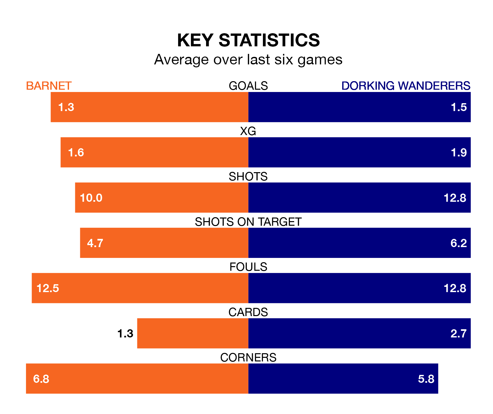

Relegation candidates Dorking Wanderers face a challenge away against high-flying Barnet at the Hive Stadium on Saturday.
Dorking Wanderers are 23rd in the National League table, and have picked up 12 wins and six draws in their 39 games to date.
The Bees, meanwhile, are second in the standings with 71 points, having won 22 and drawn five, and are 21 points behind table-toppers Chesterfield.
With 71 goals in 39 games so far this season, Barnet are the league's joint-third-highest scorers with 1.8 goals per game. And they are conceding fewer than average, letting in 53 goals at a rate of 1.4 per game.
Dorking, meanwhile, are below average scorers, with 1.2 goals per game, compared to a league average of 1.5. They have conceded 1.7 goals per game.
The Bees are in reasonable form in the National League, with four wins and two losses from their last six games.
With a win and a draw over that period, Wanderers' form is much worse – they have taken four points from 18, compared to the home team's 12.
In the last five years, Barnet and Dorking have played each other on four occasions. Barnet won one of them and Dorking the other.
On average, the Bees scored 1.2 goals and Wanderers 2.0 in those matches.
Their last meeting was on October 7, when Barnet won 3-2 away.
Barnet's last match was on Tuesday, a 2-1 win against Eastleigh, with Dale Anthony Gorman and Gatlin O'Donkor getting the goals for the Bees.
Dorking drew 1-1 with Solihull Moors last time out, on March 16, with Jason Prior on the scoresheet.
Updated: 10:19 (UTC), 22/03/24